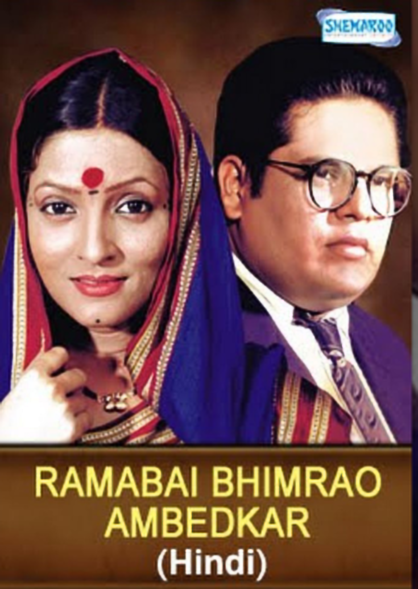

-
Bhimrao Ramji Ambedkar (14 April 1891 – 6 December 1956) was an Indian jurist, economist, social reformer, and political leader who headed the committee that drafted the Indian Constitution from the Constituent Assembly debates, served as Law and Justice minister in Jawaharlal Nehru's first cabinet, and inspired the Dalit Buddhist movement after renunciating Hinduism.
-
On 14 April 1891, Ambedkar was born in the town and military cantonment of Mhow (now officially known as Dr Ambedkar Nagar) (now in Madhya Pradesh). He was the 14th and final child of Ramji Maloji Sakpal, a Subedar in the army, and Bhimabai Sakpal, the daughter of Laxman Murbadkar.His family came from the town of Ambadawe (Mandangad taluka) in the Ratnagiri district of modern-day Maharashtra. Ambedkar was born into the Mahar (dalit) caste, which was considered untouchable and faced socioeconomic discrimination. His ancestors had long worked for the British East India Company's army, and his father had served in the British Indian Army at the Mhow cantonment.
-
Ambedkar's family relocated to Mumbai in 1897, and he became the only untouchable student at Elphinstone High School. When he was about 15 years old, he married Ramabai, a nine-year-old girl. The couple's parents arranged the match in accordance with prevailing custom at the time.In 1907, he passed his matriculation examination and enrolled in Elphinstone College, which was affiliated with the University of Bombay, becoming the first member of his Mahar caste to do so, according to him. When he passed his English fourth standard exams, his community wanted to celebrate because they thought he had reached "great heights," which he describes as "hardly an occasion compared to the state of education in other communities."
Ambedkar was named principal of the Government Law College in Bombay in 1935, a position he held for two years. After the death of its founder, Shri Rai Kedarnath, he served as chairman of the governing body of Ramjas College, University of Delhi. After settling in Bombay (now Mumbai), Ambedkar oversaw the construction of a house and amassed a personal library of over 50,000 books. The same year, his wife Ramabai died after a long illness. It had been her long-held desire to visit Pandharpur, but Ambedkar had refused to let her go, telling her that he would build a new Pandharpur for her instead of Hinduism's Pandharpur, which treated them as untouchables.

Ambedkar was the first Indian to earn a doctorate in economics outside of India. He contended that industrialization and agricultural expansion could benefit the Indian economy. He emphasized agriculture investment as India's primary industry.[Citation required] Ambedkar advocated for national economic and social development, emphasizing education, public hygiene, community health, and housing as basic necessities. His DSc thesis, The Problem of the Rupee: Its Origin and Solution (1923), investigates the reasons for the rupee's depreciation. In this dissertation, he argued for a modified gold standard, as opposed to the gold-exchange standard advocated by Keynes in his treatise Indian Currency and Finance (1909).
Bal Bhimrao:Filmmaker Prakash Narayan Jadhav directed the Marathi biographical film ‘Bal Bhimrao’ in 2018. Among the film's cast members were Mohan Joshi, Vikram Gokhale, Kishori Shahane Vij, and Prema Kiran. The film delved deep into the younger days of Ambedkar. It showcased the way how his thinking was shaped right from his very childhood.
Ramabai Bhimrao Ambedkar: Filmmaker Prakash Jadhav directed ‘Ramabai Bhimrao Ambedkar’ in 2011. It was a biographical film on Ambedkar and his wife in Marathi. Actors Nisha Parulekar, Ganesh Jethe, Dashrath Hatiskar, and Snehal Velankar played the important characters in the film. This film dealt with Ambedkar’s grown-up life and focused more on his wife.
Religion In 1935, Ambedkar stated that he was born a Hindu but would not die a Hindu. He saw Hinduism as a "oppressive religion" and began to consider converting to another faith. Ambedkar claims in Annihilation of Caste that the only way to achieve a truly casteless society is to destroy the belief in the sanctity of the Shastras and deny their authority. During 1954-1955, Ambedkar wrote a book titled Riddles in Hinduism in which he criticized Hindu religious texts and epics.